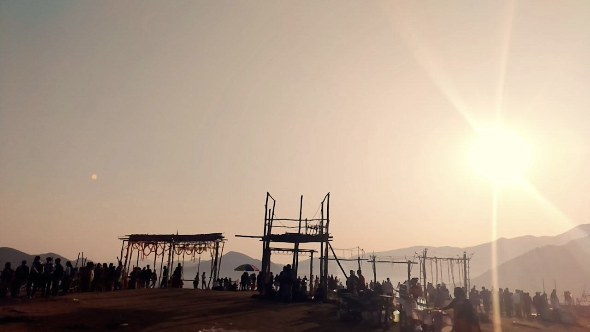

Traveling
Destinations
Tribal Dance video
Traveling Blog
Traveling is one of the
Dream
for every person
Experience
This is one of my Experience in
Traveling
Different Destinations
Lambasingi

Araku
Vizag
Starting point to Ending
Guntur
Lambasingi
Araku
Borra Caves
Final Destination
Vizag -
City of Destiny
There is No Guide for us.
Google Maps is one and only guide for us.
Attracting Tourists with their Dance